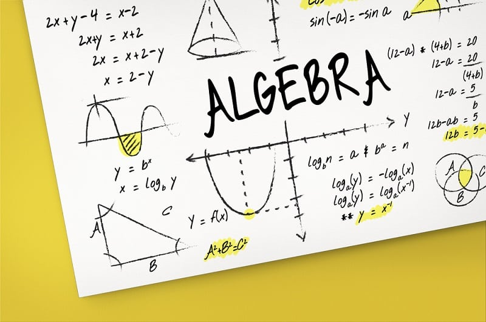

|  | A Lineáris algebra c. tárgy ütemterve, 2019/2020 I. félév | |
| Hét | Előadás | |
| 1.hét | Számhalmazok, Halmazok Descartes szorzata, Koordinátarendszer | |
| 2.hét | Kombinatorikai alapfogalmak, Newton Binomiális tétele | |
| 3.hét | Függvény fogalma, függvények egyenlősége | |
| 4.hét | Számítási szabályok félcsoportban és csoportban | |
| 5.hét | Komplex számokkal végzett műveletek algebrai és trigonometriai alakban | |
| 6.hét | Polinomokkal végzett műveletek tulajdonságai | |
| 7.hét | Mátrixok, mátrixokkal végzett műveletek tulajdonságai | |
| 8.hét | Determináns tulajdonságai és kiszámítása | |
| 9.hét | Lineáris tér fogalma, Lineáris altér, Alterek metszete | |
| 10.hét | Generátorrendszerek és lineárisan független elemrendszerek lineáris térben | |
| 11.hét | Lineáris transzformáció mátrixos alakja | |
| 12.hét | Egyenletrendszerek megoldása Gauss módszerrel, Rangtétel | |
| 13.hét | Izomorfizmus algebrai struktúrák között | |
| 14.hét | Számítási szabályok gyűrűben és testben | |